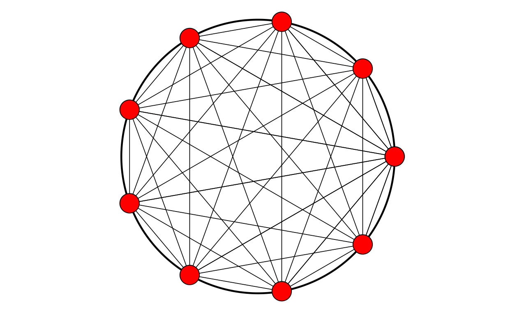

I have used a rather horrible graphic for some PSYCTC things since the dark ages but I wanted a logo to use for the Zenodo community/repository I have created and this …

… ancient 248x248 gif just wasn’t nice enough! To be fair, that’s the Distill/Rmarkdown blowing it up having inserted it just with
What happens if I insert it using simple html code and supplying dimensions with this inline html code?
<img src="https://www.psyctc.org/psyctc/wp-content/uploads/2019/01/cropped-g2_256-1.gif" width="248" height="248"/>
Hm. I don’t understand that, clearly I could do some more reading about embedding graphics files into distill output but that’s not the focus here. Enough playing around with that now!
What I really want is a function that will draw a nicer version of that but could also be used by people writing about groups and wanting simple graphic depictions of the group.
Here’s what I got in place on zenodo, and here it is here. More on it, and where I might got to extend this to something more generally useful, below.
Show code
makeLogo <- function(nPoints = 8,
centre = c(0, 0), # might want to change
diameter = 1,
nCircumfPoints = 500,
circumfThickness = 1,
circumfColour = "black",
shape = 21,
pointSize = 3,
pointColour = "black",
pointFill = "white",
lineThickness = 2,
lineColour = "black") {
### start by making tibble of points that make the circumference
makeCircumfTib <- function(centre = centre,
diameter = diameter,
npoints = nCircumfPoints){
r <- diameter / 2
### sequence of points (in radians)
tt <- seq(0,2*pi, length.out = npoints)
### get the coordinates on Cartesian plot using
### elemenary trigonometry!
xx <- centre[1] + r * cos(tt)
yy <- centre[2] + r * sin(tt)
### make a data frame of those values
tmp <- data.frame(x = xx,
y = yy)
### return it as a tibble
return(as_tibble(tmp))
}
### use that to make the points making up the circumference
makeCircumfTib(centre = centre,
diameter = diameter,
npoints = nCircumfPoints) -> tibCircle
### similar to create the locations of the required numbers of points
makePointsTib <- function(nPoints = 8,
centre = c(0,0),
diameter = 1) {
r <- diameter / 2
### this is the only difference from the circumference (which actually plots the first and last points
### at essentially the same point (except for rounding inaccuracies))
tt <- seq(0, 2*pi, length.out = nPoints + 1) # to get nPoints points need nPoints + 1 steps
xx <- centre[1] + r * cos(tt)
yy <- centre[2] + r * sin(tt)
tmp <- data.frame(x = xx,
y = yy)
### create a tibble of these but with an index for the points, i
tmp %>%
as_tibble() %>%
mutate(i = row_number()) %>%
select(i, x, y) -> tmpTib
return(tmpTib)
}
### use that to make the tibble
makePointsTib(nPoints = nPoints,
centre = centre,
diameter = diameter) -> tibPoints
### now make the tibble for the lines starting from that last tibble
makeLinesTib <- function(tibPoints){
tibPoints %>%
### rename to create a row for each line termination on the points
rename(j = i,
x1 = x,
y1 = y) %>%
mutate(nPoints = max(j)) %>% # get the number of points
### and use that to replicate each row above that number of times
uncount(nPoints, .remove = FALSE) %>%
### create a new index for each origin point for each line
mutate(i = row_number() %% nPoints, # modulo arithmetic to get that
i = if_else(j == 0, nPoints, i)) %>% # sort out first of those
### now we have a row for all n^2 combinations of points
### this next line avoids having each line twice and
### removes the rows that create a line from the point to itself (i == j)
filter(i < j) %>%
### now merge that tibble of n*(n-1)/2 rows with the original n point locations
left_join(tibPoints, by = "i") %>%
### rename to get the second points for each line
rename(x2 = x,
y2 = y) -> tibLines
return(tibLines)
}
### use that to make the tibble of the lines
makeLinesTib(tibPoints) -> tibLines
### finally draw the logo/map
ggplot(tibCircle,
aes(x = x, y = y)) +
### draw the out circle
geom_path(colour = circumfColour,
size = circumfThickness) +
### draw the lines connecting the points
### do this before drawing the points so the points overlay the lines
geom_segment(data = tibLines,
aes(x = x1, y = y1, xend = x2, yend = y2),
size = lineThickness,
colour = lineColour) +
### draw the points
geom_point(data = tibPoints,
aes(x = x, y = y),
shape = 21,
size = pointSize,
colour = pointColour,
fill = pointFill) +
### a bit of fixing of the canvas
coord_fixed() + # get square geometry
theme_no_axes() + # what it says and get rid of border ...
theme(panel.border = element_blank()) -> gLogo
print(gLogo)
}
### so now we use this for nine points
makeLogo(nPoints = 9,
centre = c(0, 0),
diameter = 1,
nCircumfPoints = 500,
circumfThickness = .5,
circumfColour = "black",
pointSize = 1,
pointColour = "black",
pointFill = "white",
lineThickness = .5,
lineColour = "black")I wanted that as a file that I could upload to Zenodo. The ggsave() function is the way I save ggplot output. I thought I should generate different sizes of file and that actually means tweaking the line widths for the graphic to look OK at the different file sizes. In the next blockI’ve put the code I used to got reasonable looking images at 256x256px, 512x512px, 1024x1024px and 2048x2048px. For each size the png file was smaller and seemed to look no worse than the jpeg. I’ve marked the block not to be run as this is just about exporting files, we don’t need the output, but I have left them here in case they might be useful to others.
Show code
### save png files
### I have kept these lines here so people who want can copy them
makeLogo(nPoints = 9,
centre = c(0, 0),
diameter = 1,
nCircumfPoints = 500,
circumfThickness = .2,
circumfColour = "black",
pointSize = .6,
pointColour = "black",
pointFill = "white",
lineThickness = .2,
lineColour = "black")
ggsave("PSYCTC_logo_256x256.png",
device = "png",
scale = 1,
units = "px",
width = 256,
height = 256)
makeLogo(nPoints = 9,
centre = c(0, 0),
diameter = 1,
nCircumfPoints = 500,
circumfThickness = .4,
circumfColour = "black",
pointSize = .9,
pointColour = "black",
pointFill = "white",
lineThickness = .4,
lineColour = "black")
ggsave("PSYCTC_logo_512x512.png",
device = "png",
scale = 1,
units = "px",
width = 512,
height = 512)
makeLogo(nPoints = 9,
centre = c(0, 0),
diameter = 1,
nCircumfPoints = 500,
circumfThickness = .5,
circumfColour = "black",
pointSize = 1,
pointColour = "black",
pointFill = "white",
lineThickness = .5,
lineColour = "black")
ggsave("PSYCTC_logo_1024x1024.png",
device = "png",
scale = 1,
units = "px",
width = 1024,
height = 1024)
makeLogo(nPoints = 9,
centre = c(0, 0),
diameter = 1,
nCircumfPoints = 500,
circumfThickness = .8,
circumfColour = "black",
pointSize = 2,
pointColour = "black",
pointFill = "white",
lineThickness = 1,
lineColour = "black")
ggsave("PSYCTC_logo_2048x2048.png",
device = "png",
scale = 1,
units = "px",
width = 2048,
height = 2048)
### save jpeg files
makeLogo(nPoints = 9,
centre = c(0, 0),
diameter = 1,
nCircumfPoints = 500,
circumfThickness = .2,
circumfColour = "black",
pointSize = .6,
pointColour = "black",
pointFill = "white",
lineThickness = .2,
lineColour = "black")
ggsave("PSYCTC_logo_256x256.jpeg",
device = "jpeg",
scale = 1,
units = "px",
width = 256,
height = 256)
makeLogo(nPoints = 9,
centre = c(0, 0),
diameter = 1,
nCircumfPoints = 500,
circumfThickness = .4,
circumfColour = "black",
pointSize = .9,
pointColour = "black",
pointFill = "white",
lineThickness = .4,
lineColour = "black")
ggsave("PSYCTC_logo_512x512.jpeg",
device = "jpeg",
scale = 1,
units = "px",
width = 512,
height = 512)
makeLogo(nPoints = 9,
centre = c(0, 0),
diameter = 1,
nCircumfPoints = 500,
circumfThickness = .5,
circumfColour = "black",
pointSize = 1,
pointColour = "black",
pointFill = "white",
lineThickness = .5,
lineColour = "black")
ggsave("PSYCTC_logo_1024x1024.jpeg",
device = "jpeg",
scale = 1,
units = "px",
width = 1024,
height = 1024)
makeLogo(nPoints = 9,
centre = c(0, 0),
diameter = 1,
nCircumfPoints = 500,
circumfThickness = .8,
circumfColour = "black",
pointSize = 2,
pointColour = "black",
pointFill = "white",
lineThickness = 1,
lineColour = "black")
ggsave("PSYCTC_logo_2048x2048.jpeg",
device = "jpeg",
scale = 1,
units = "px",
width = 2048,
height = 2048)Arguments to the function that enable you to change the pictures
This is very simple stuff. The function prints the plot, it might be better to return the ggplot object rather than printing it, or to offer the choice between the two as a parameter or two (“print” TRUE/FALSE, or “printOrReturn”) with options “p” or “r” or two arguments, “print” TRUE/FALSE and “return” TRUE/FALSE). The arguments the function has at the moment are:
makeLogo(nPoints = 9, # number of points/bodies/group members
centre = c(0, 0), # where to put the centre of the circle, only useful if overlaying a plot on another
diameter = 1, # diameter, again only useful if overlaying or combining plots
nCircumfPoints = 500, # use enough to get a smooth enough circumference at the size of your plot
circumfThickness = .5, # what it says: thickness of the circumference line
circumfColour = "black", # what it says
pointSize = 1, # allows you to vary this
pointColour = "black", # what it says
pointFill = "white", # the points default to filled circles
lineThickness = .5, # thickness of the connecting lines between points (same scale as for circumference)
lineColour = "black") # colour of the connecting linesHere’s some playing around with some of these.
Number of points
Show code
[1] "nPoints = 3"[1] "nPoints = 4"[1] "nPoints = 5"[1] "nPoints = 6"[1] "nPoints = 7"[1] "nPoints = 8"[1] "nPoints = 9"
[1] "nPoints = 10"[1] "nPoints = 11"[1] "nPoints = 12"[1] "nPoints = 13"[1] "nPoints = 14"[1] "nPoints = 15"Quite pretty, I like the way that the centre is empty for odd numbers of points and a star for even numbers of points.
Sizes of points
Show code
for (pointSize in seq(.5, 7.5, 1)) {
print(paste0("pointSize = ", pointSize))
makeLogo(nPoints = 9,
centre = c(0, 0),
diameter = 1,
nCircumfPoints = 500,
circumfThickness = .8,
circumfColour = "black",
pointSize = pointSize,
pointColour = "black",
pointFill = "white",
lineThickness = 1,
lineColour = "black")
}[1] "pointSize = 0.5"[1] "pointSize = 1.5"[1] "pointSize = 2.5"[1] "pointSize = 3.5"[1] "pointSize = 4.5"[1] "pointSize = 5.5"[1] "pointSize = 6.5"[1] "pointSize = 7.5"Fill colour
Show code
for (pointFill in c("black", "white", "red", "green", "blue")) {
print(paste0("pointFill = ", pointFill))
makeLogo(nPoints = 9,
centre = c(0, 0),
diameter = 1,
nCircumfPoints = 500,
circumfThickness = .8,
circumfColour = "black",
pointSize = 8,
pointColour = "black",
pointFill = pointFill,
lineThickness = .3,
lineColour = "black")
}[1] "pointFill = black"[1] "pointFill = white"[1] "pointFill = red"
[1] "pointFill = green"[1] "pointFill = blue"Line colour
Show code
for (lineColour in c("black", "white", "red", "green", "blue")) {
print(paste0("lineColour = ", lineColour))
makeLogo(nPoints = 9,
centre = c(0, 0),
diameter = 1,
nCircumfPoints = 500,
circumfThickness = .8,
circumfColour = "black",
pointSize = 2,
pointColour = "black",
pointFill = "black",
lineThickness = 2,
lineColour = lineColour)
}[1] "lineColour = black"[1] "lineColour = white"[1] "lineColour = red"[1] "lineColour = green"[1] "lineColour = blue"
Ways this might evolve
I don’t think this is of enough general utility to do the necessary additions to roll it into CECPfuns now but I may.
However, I do think this creates a base from which I might build something of more general use to group therapists. Sensible additions might be:
allow different shapes (it’s typical to mark gender usually in binary as square and circle, use square, circle and diamond?), supply as a vector or list
allow different shapes for therapists and clients (using fill colour?)
allow addition of labels to the points (probably best to put these outside the circle)
allow omission of lines or different colours of lines (omissiong can be done by setting colour to background colour). If so, best to supply as a tibble of the lines and sensible to add an auxiliary function making it easy to stipulate colours of bunches of lines: needs some thought.
allow addition of arrowheads to particular lines (same issues as last point)
allow setting of thickness of lines (same issues, watch for sensible thicknesses)
allow omission of points (i.e. keep number of placeholders/chairs, but blank out missing person). Might make omission of lines from/to absent people automatic … or not, sometimes a lot is said about a missing person!) Could just make omission of arrowheads from the missing person/people automatic.
allow addition of notes/labels to the whole, e.g. “Group 17, 11/9/22”. Perhaps allow four sets of such annotations: top left, top right …
allow addition of notes/lables outside the naming/identity labels on points that would allow comments like “arrived 30 minutes late” or “very unhappy this week”
animate these
might be possible to create a standard spreadsheet that would make it easy for therapists to feed these things in for all the members for all the group occasions
Hm. All of that would be a lot of work but perhaps of very real utility. It would probably be evolving beyond just some R to something that might need some wider collaboration on the data to store on groups’ composition and activity (in the sense of those linking lines) and perhaps beyond that to an open data standard for group data more widely (e.g. adding changes in self-appraisals or group appraisals). My experience of the last decade tells me it would then really need an open standard, open source data entry system. Hm, that’s getting beyond my time and skills.
Do contact me if you might be interested in collaborating to develop things for group therapies along the lines above.